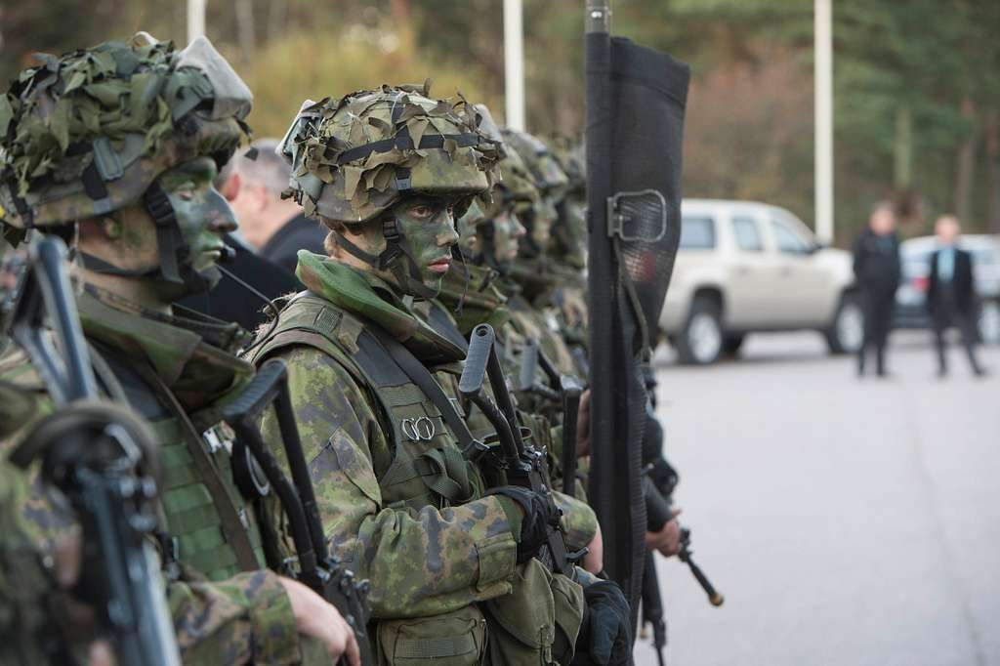
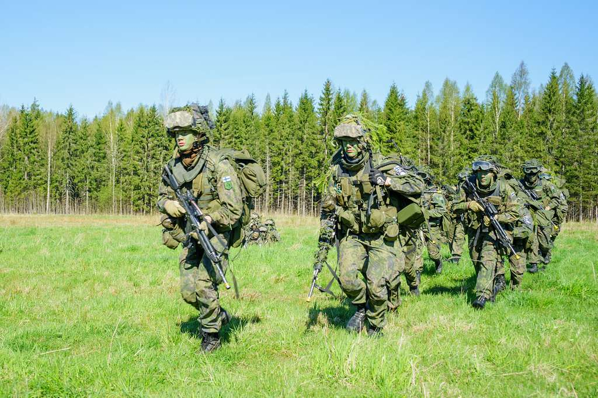

Hakeutuminen Suomen kansainvälisiin valmiusjoukkoihin
Hakeutuminen varusmieheksi SKVJ-koulutukseen Porin prikaatiin Säkylään tapahtuu OmaIntti-palvelun kautta lokakuun 2023 alusta tammikuun 2024 loppuun asti. Hakuajan päätyttyä soveltuvat hakijat kutsutaan keväällä 2024 pidettävään valintatilaisuuteen.
https://maavoimat.fi/tapahtumat/2023-10-01/haku-suomen-kansainvalisiin-valmiusjoukkoihin Hakijalta vaaditaan:
- hyvä terveydentila, palveluskelpoisuusluokka A
- hyvä fyysinen kunto
- Cooper 2 500 m
- Lihaskuntotestissä saavutettava tavoite taso 3 (95 pistettä)
- Evakuointitesti alle 2 min
- psykologisten kokeiden läpäiseminen
- vähintään tyydyttävä suomen ja englannin kielen taito
- hyvä paineensietokyky
- valmius sitoutua kansainvälisiin valmiusjoukkoihin ja lähteä ulkomaille koulutuksen jälkeen
- suostumus huumausainetestiin
Hakijalla ei saa olla:
- rikosrekisteriä (pl. vähäiset liikennerikkomukset)
- sairautta, erityistä herkkyyttä, rakenteellista heikkoutta tai säännöllistä lääkitystä, joka estäisi kriisinhallintapalveluksen
Cooper-testi
Cooper-testi on 12 minuutin juoksutesti, jolla mitataan maksimikestävyyttä. Testi suoritetaan juoksuradalla ja sen tarkoituksena on mitata maksimaalista matkaa, minkä testattava kykenee juoksemaan 12 minuutin aikana.
Testissä on taloudellisinta juosta tasaista vauhtia. Mikäli et ole koskaan aikaisemmin suorittanut Cooper-testiä, testiä suositellaan kokeilemaan vähintään kerran ennen pääsykokeisiin saapumista. Testiin valmistautumiseen on olemassa harjoitusohjelmia, joista muutama on linkattu alle. Tasaisen vauhdin taulukosta näet, mihinkä aikaan sinun tulee juosta esimerkiksi 400 metrin matka, jotta pääset tavoitteeseesi.
Hyväksytyn suorituksen raja pääsykokeissa on 2 500 metriä, mikä tarkoittaa 400 metrin radalla 1 minuutin ja 55 sekunnin kierrosaikaa. Kun harjoittelet testiä varten, kannattaa harjoitella vähintään 2 600 metrin tulosta silmällä pitäen, jotta itse pääsykokeissa mahdollisesti vaikuttava jännitys tai olosuhteet eivät vaikuta ratkaisevasti hyväksytyn suorituksen saamiseen.
Lihaskuntotesti
Lihaskuntotestissä tulee saavuttaa vähintään 95 pistettä. Lihaskuntotestin pisteet muodostuvat seuraavasti: Yksi toisto minuutin istumaannousutestissä ja etunojapunnerrustestissä = yksi piste, vauhdittoman pituushypyn tulos metreinä x 20 = pisteet. Kussakin osalajissa on minimivaatimukset, jotka on saavutettava: vauhditon pituus 1,00 (m), istumaannousu 10 (krt/min), etunojapunnerrus 5 (krt/min). Pisterajat ja suoritustavat ovat naisilla ja miehellä samat.
Tarkemmat pisterajat ilmoitetaan hakeutuneille valintakoekutsussa.